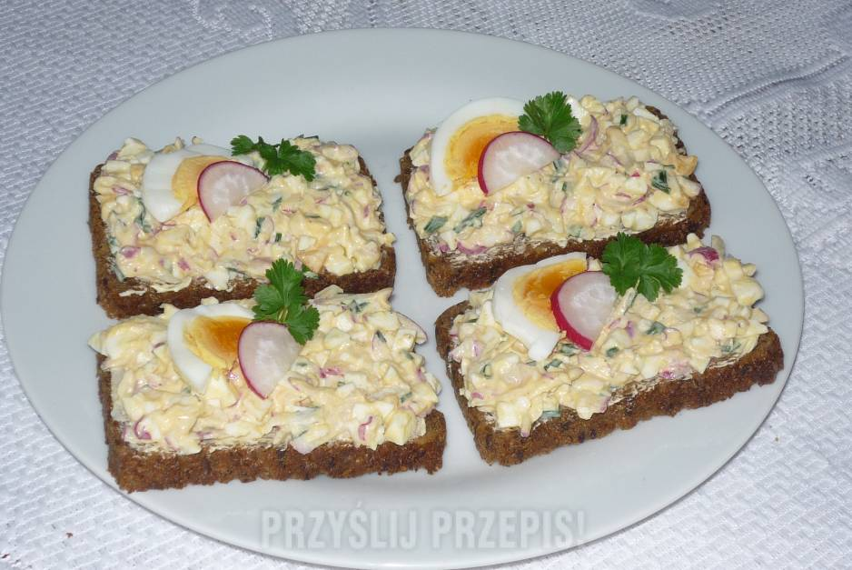

Pasta jajeczna z rzodkiewką

Recipe:
- Gotuj jajka w bulgoczącej wodzie (na twardo).
- Po uprzednim obraniu, zetrzyj jaka na tarce o grubych oczkach.
- Rzodkiewki po umyciu i osuszeniu również zetrzyj na tarce.
- Umyty szczypiorek osusz i posiekaj
- Wszystkie składniki dokładnie ze sobą wymieszaj.
- Dodaj majonez i wymieszaj.
- Dopraw do smaku solą i pieprzem.